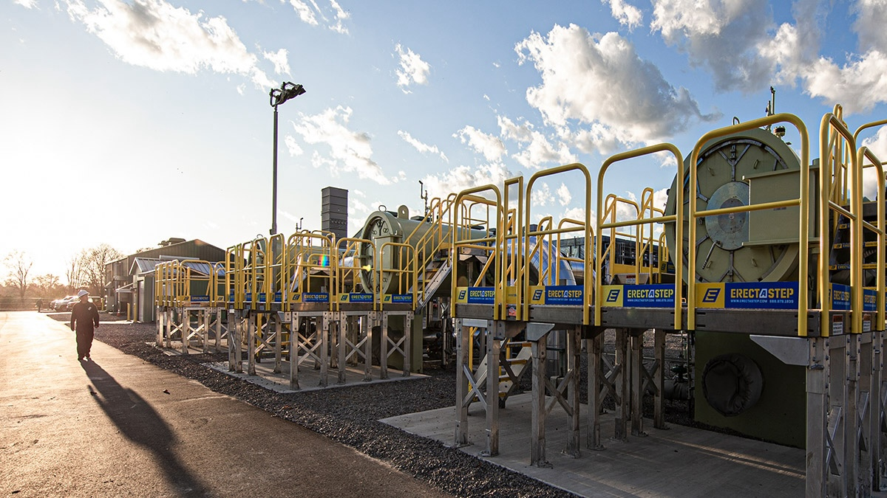
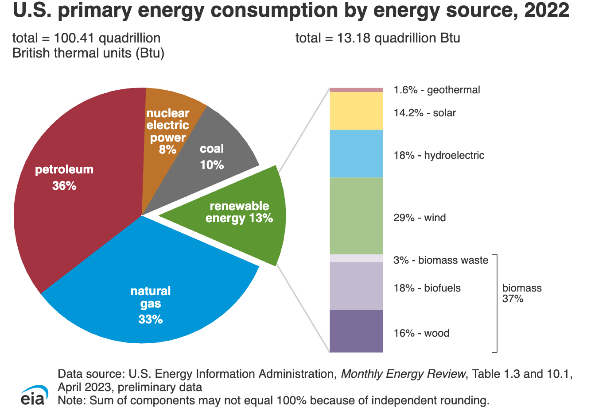
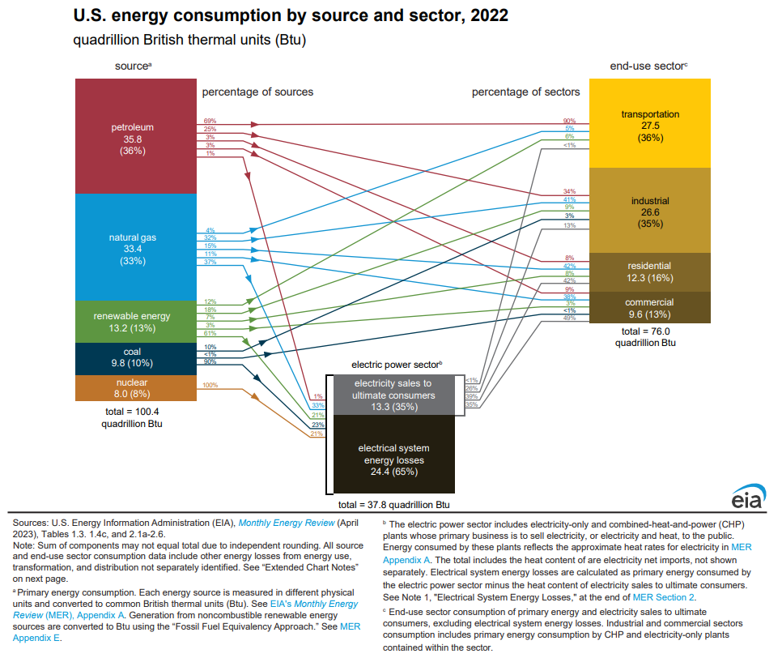
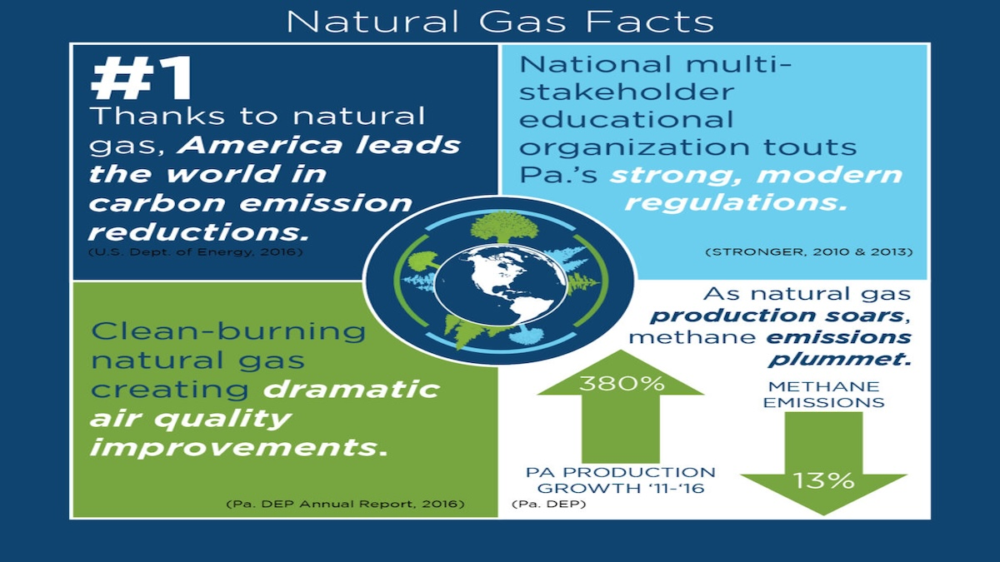
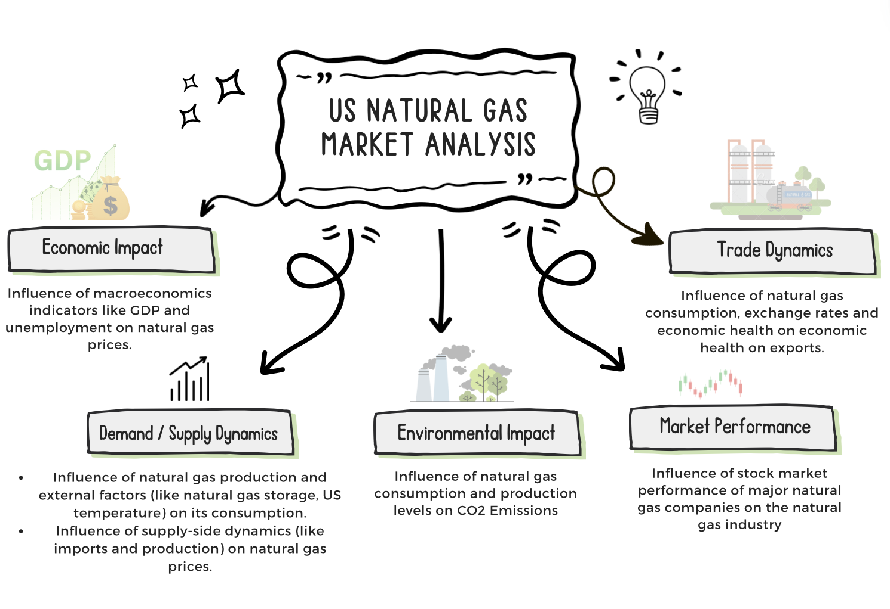

Analysis of Natural Gas Industry in the US

Introduction
In the big picture of America’s energy scene, natural gas is like a star player – it’s affordable, does a good job, and is kinder to the environment compared to old-school fuels. They call it a “bridge fuel,” helping us move from the old ways of powering things to a cleaner, greener future. It’s a practical choice that keeps the lights on while we figure out the renewable energy stuff. And natural gas isn’t just about making power; it’s woven into everything, influencing how we do business, sparking new ideas, and even playing a role in how countries work together. So, when we talk about natural gas, it’s not just about keeping the energy flowing – it’s about shaping how we live and where we’re headed.
Zooming in on the U.S. natural gas scene, you realize it’s not just about drilling and pipelines. It’s part of everyday life, from heating our homes to fueling the machines that make stuff. But its impact goes even deeper, affecting jobs, technology, and even how countries relate to each other. Natural gas isn’t just a player in the energy game; it’s like a backstage VIP, pulling strings that touch everything from local businesses to global affairs. So, as the way we power up changes, natural gas keeps holding its own, being a key player in the U.S. story – past, present, and future.
Watch how natural gas has our backs. It provides energy when renewables don’t have enough power stored, to help us keep up with our modern lifestyles.
Literature review
Nowhere is the influence of natural gas more pronounced than in the United States. As both the world’s largest producer and consumer of natural gas, the nation relies heavily on this resource.
Talking about natural gas production, significant sources include basins such as the Marcellus and Utica Shale formations in Appalachia, as well as the Haynesville Shale formation in Louisiana and East Texas. The U.S. Geological Survey estimates that the Appalachian formations contain approximately 214 trillion cubic feet of undiscovered, technically recoverable continuous natural gas resources. Thanks to advancements in drilling and extraction technologies, it’s now possible to produce large quantities of natural gas safely and cost-effectively, providing a reliable local supply for consumers. Source

Consumption of natural gas in the U.S. has grown alongside production, it claims a substantial 33% share in the U.S. energy consumption landscape, making it a cornerstone in the nation’s energy portfolio.

The applications of natural gas are diverse, ranging from electricity generation to fueling vehicles, heating homes, and cooking. Significantly, it is used for heating, electricity generation, and industrial processes in the U.S., highlighting its pivotal role in the nation’s power infrastructure.

Beyond its energy applications, the natural gas industry is an economic powerhouse. Rising natural gas production has historically correlated directly with economic growth in the country – with the past decade-plus being a prime example.
As natural gas production skyrocketed in the United States over the past decade-plus, the U.S. enjoyed an unprecedented 11 consecutive years of gross domestic product (GDP) growth prior to the COVID-19 pandemic. The natural gas boom has been credited for 8% of GDP growth since the Great Recession. Source1 Source2
This economic prosperity can largely be explained by the fact that strong domestic natural gas production dramatically reduces foreign imports, keeping billions of dollars here in our own economy rather than exporting them oversees. Our newfound energy bounty has also proven the equivalent of a massive tax cut, lowering energy costs dramatically. In fact, the Department of Energy reported in 2018 that average U.S. energy costs fell 34 percent from 2008 to 2016, dropping from record-high levels to a “record-low energy expenditure share” in less than a decade. Source
The U.S.natural gas industry also continues to support more than 10.3 million jobs across the United States, with direct natural gas industry jobs paying an average salary double the private sector average ($112,712 per year). Source
Energy is the one thing that all Americans use. And with that fundamental reality in mind, we have literally been able to drill our way to lower energy prices and economic prosperity over the past decade-plus, all while reducing greenhouse gas emissions. Source
 Source
The United States has reduced carbon dioxide emissions more than any other country this century. And although it may surprise casual observers, experts agree that the primary reason for these emission declines is fuel-switching to clean-burning natural gas, which has been made possible by industry innovation. That’s right: the same technologies that have allowed us to emerge as the leading oil and natural gas producer in the world are also largely responsible for our status as the world leader in greenhouse gas emission reductions. The decoupling trend is unprecedented and shows that we don’t have to choose between the economy and environment. The emissions reductions have been driven by fuel-switching in the electricity generation sector, with the Energy Information Administration estimating that natural gas is actually responsible for 58 percent more power sector CO2 emissions reductions than renewables and other non-carbon electricity generation sources. Source
Recent Record-Breaking Consumption

In a remarkable turn of events, the severe U.S. winter weather in mid-January 2024 set new records for natural gas consumption. On January 16, 2024, consumption reached an unprecedented monthly high while the prices for the heating fuel have dropped to their lowest since April. This real-world event offers a tangible backdrop to the broader exploration, showcasing how the industry responds to and is influenced by external factors. Source
Explore the big picture

Analytical Angles
This project aims to deepen understanding of the natural gas sector’s crucial role within the broader energy matrix by analyzing economic, environmental, demand and supply dynamics, stock market interactions, and trade impacts. It will highlight current market conditions and forecast future trends.
Economic Impact
This comprehensive analysis embarks on a multifaceted journey to unravel the correlation between natural gas industry dynamics and key economic indicators such as GDP and unemployment rates. The analysis primarily focuses on how these economic factors impact natural gas prices, illuminating the industry’s influence on the broader economic health of the nation.
Demand/Supply Dynamics
This analysis delves into the dynamics of demand and supply, exploring how factors such as natural gas prices, storage, and temperature influence consumption, as well as how supply-side dynamics, including imports and production, affect natural gas prices. A thorough understanding of these demand and supply behaviors will enrich the analysis.
Environmental Impact

A crucial facet of the exploration lies in understanding the Environmental Impact of natural gas consumption and production. By correlating natural gas usage and production with carbon emissions, the analysis contributes to the ongoing discourse on sustainable energy practices.
Market Performance
Extending into the Financial Markets, the analysis scrutinizes the stock market performance of major energy companies involved in natural gas production. This facet provides insights into the industry’s financial resilience and responsiveness to market dynamics.
Trade Dynamics
Trade dynamics form a crucial part of this analysis, examining how natural gas trade relationships contribute to a broader understanding of the industry’s global economic influence. This analysis specifically explores how U.S. natural gas consumption, exchange rates, and the economic health of importing country affect natural gas exports.
Guiding Questions
How can we anticipate changes in natural gas prices based on economic indicators like GDP and unemployment rates?
How can we optimize natural gas consumption in response to fluctuating production levels, and external factors like temperature and storage capacities?
How do domestic consumption, exchange rates, and the economic health of importing countries like the Netherlands affect US natural gas export volumes?
How can changes in natural gas consumption and production levels be expected to influence CO2 emissions?
How can understanding the relationship between supply dynamics, such as changes in imports and production, help optimize pricing strategies and inventory management for natural gas at Henry Hub?
How do stock market trends of major natural gas companies reflect the overall health of the natural gas industry?
What are the future trends in natural gas prices based on historical price patterns?
How can we use historical consumption patterns to predict future demand for natural gas, and how might this influence US procurement and distribution strategies?
Can we anticipate the future levels of natural gas imports and exports based on historical data?
Can we predict future trends in CO2 emissions based solely on their historical patterns?Based on trends in CO2 emissions from natural gas usage, how can companies adjust their practices to better meet environmental standards?